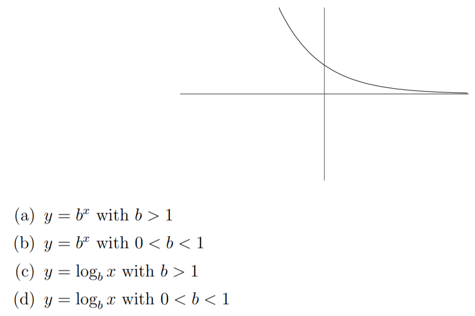
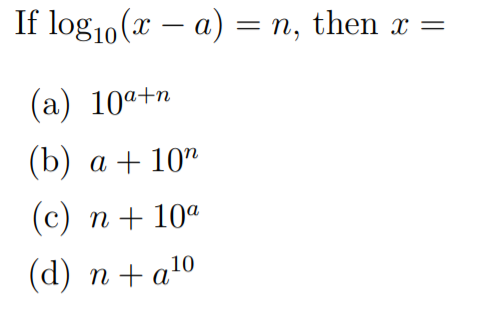

- 
- 

We may have learned in grade school that \(a^x\) meant repeatedly multiplying \(a\) \(x\) times, i.e. \(\underbrace{a \cdot a \cdot a \cdot ... \cdot a}_{x \text{ times}}\)
What does \(a^{\pi}\) or \(a^{\sqrt{2}}\) mean then?
Definition: Let \(a^x = e^{\ln a^x} = e^{x \ln a} \). This allows us to extend the idea of exponents. Question: Does it still encompass the old idea?
Properties
Task: Prove property 1. (hint: first prove the lemma \(e^ae^b = e^{a+b}\) )
Caffeine leaves the body at a continuous rate of 17% per hour. How much caffeine is
left in the body 8 hours after drinking a cup of coffee containing 100 mg of caffeine? What is the half life of caffeine?
“During 1988, Nicaragua’s inflation rate averaged 1.3% a day.” Which formula represents the above statement? Assume t is measured in days.
When a patient is given medication, the drug enters the bloodstream. As the drug passes through the liver and kidneys, it is metabolized and eliminated at a rate that depends on the particular drug. For the antibiotic ampicillin, approximately 40% of the drug is eliminated every hour. A typical dose of amplicillin is 250 mg. Consider the following tasks.
The following sage applet can be used to plot functions on normal(linear) and log scales.